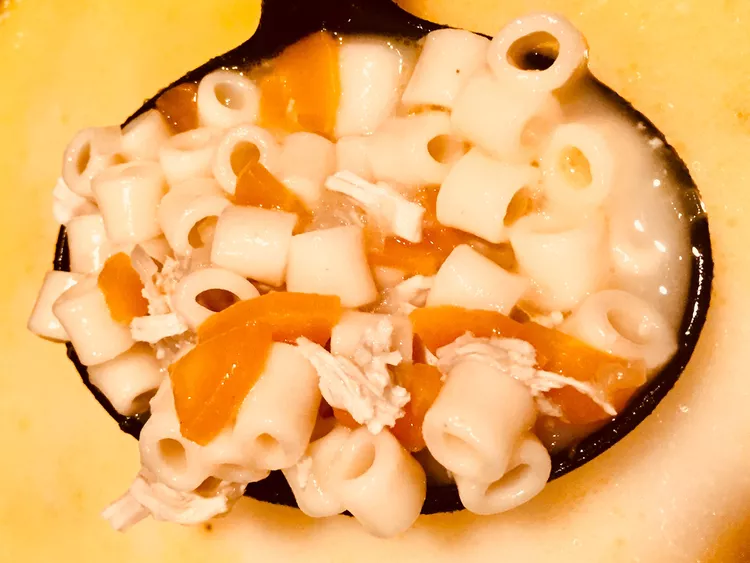

Filipino Chicken Sopas

Description
Creamy chicken macaroni soup — comfort Filipino food that transcends culture, time, and ages.
It's made simply in one pot that I have adjusted to be able to add all ingredients as you go.
Ingredients
- 6 cups water, or more as needed
- ½ onion, chopped
- 1 pound bone-in chicken thighs, skin removed
- 1 teaspoon garlic powder
- 1 teaspoon onion powder
- 2 carrots, diced
- 2 tablespoons fish sauce, or more to taste
- 4 teaspoons chicken bouillon granules
- ½ teaspoon ground black pepper
- ½ (16 ounce) package elbow macaroni
- ½ cup evaporated milk
- 3 tablespoons butter
- 1 pinch salt and ground black pepper to taste
Direction
- Combine water and onion in a pot and bring to a boil. Add chicken, garlic powder, and onion powder. Bring back to a boil and reduce heat to medium-low. Simmer broth until chicken thighs are tender, about 30 minutes.
- Remove chicken and add carrots to the broth. Stir in 2 tablespoons fish sauce, chicken bouillon, and black pepper.
- Shred chicken meat and discard bones; return meat to the broth and simmer until carrots are tender, about 10 minutes. Add macaroni; cook until tender, about 20 minutes, adding more water if needed. Stir in evaporated milk and butter; simmer until butter is melted. Add more fish sauce and season with salt and pepper to taste. Pour soup into serving bowls.